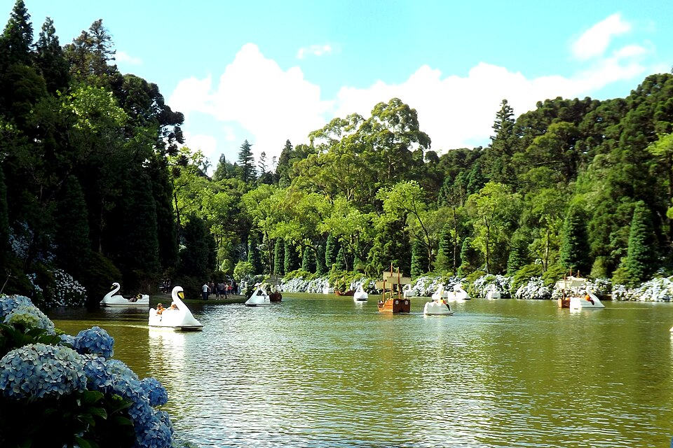

Gramado is a small city in the mountains of southern Brazil, about 115 kilometers north of Porto Alegre. It was settled in the late 1800s by German and Italian immigrants, and you can still see their influence today in the steep roofs, the stone houses, and the flower gardens along almost every street.
I like Gramado because it does not feel like the rest of Brazil. The city sits around 830 meters above sea level, so the winters are genuinely cold, which is rare here. My favorite place is Lago Negro, a small lake surrounded by pine trees where visitors rent swan-shaped paddle boats.

Photo by Larissa Fraga, from Wikimedia Commons, licensed under CC BY 3.0.